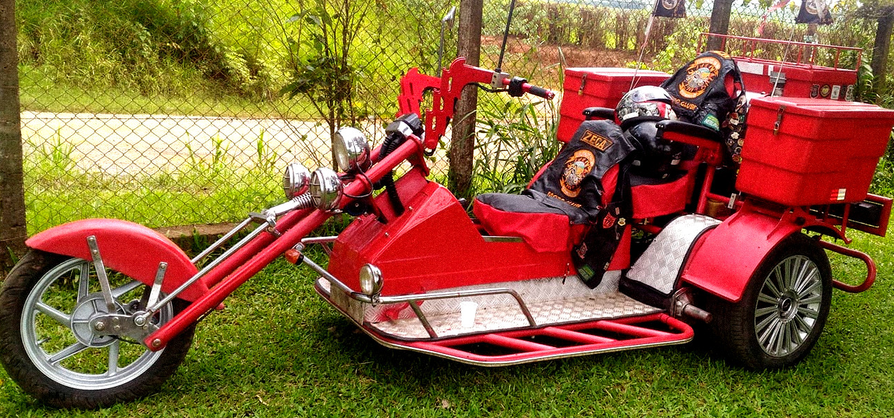
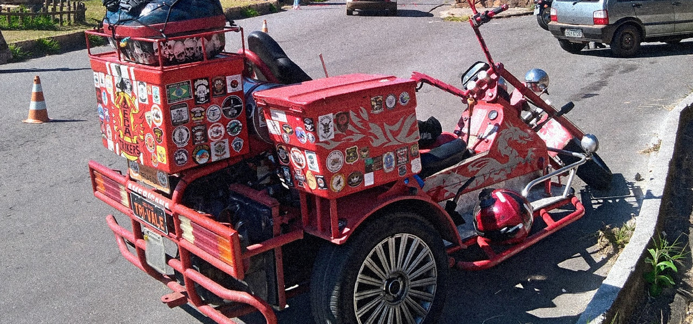
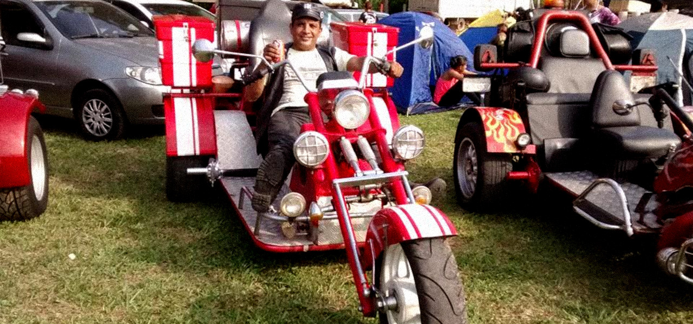
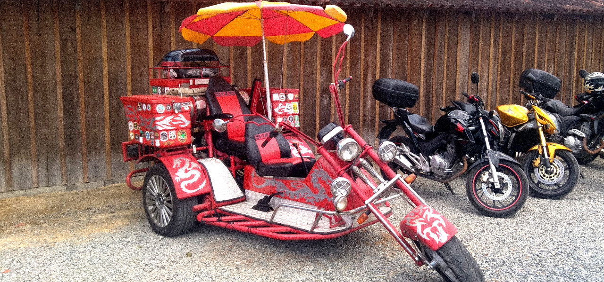

O grande Dragão vermelho
Engenharia Triangulada
Nomeado assim por seu Tricampeão, a Triunfante maquina feroz chamada Dragão Vermelho é constituida em sua maior parte de aço inoxidavel, fibra de vidro e borracha de 3 camadas, equipada com um voraz motor de gol 1.6 de 3 marchas capaz de produzir uma potencia absurda de 333 cavalos de 3 pernas, tanque de combustivel de 63 litros, escapamento triplo e espaçado, alternador trifásico de alta potencia, freio a disco de 3 pastilhas, transmissão hydraulica tripla e 3 baús parrudos de armazenamento que juntos podem comportar até 333 litros, esse monstro trinca o asfalto por onde passa, sendo capaz de percorrer até incriveis 33,3 kilometros em uma unica travessia!
Fonte: Facebook Original do Zeca [imagem editada]
Customizações Triviais
Também conta com algumas customizações triviais extras como equipamento de som avançado Triple Atmos, iluminação de led estilo neon de tripla faixa, faróis xeon de 3 feixes, guidões reforçados com espinhos cortantes, e uma combinação de pneus de carro com pneus de Harley Davidson, produzindo atrito absurdo com o asfalto e dificultando bastante a pratica de drift de triciclo ou popularmente conhecido como trift.
Fonte: Facebook Original do Zeca [imagem editada]
Como é possivel observar entre as diversas imagens apresentadas, o Dragão Vermelho também já teve diversos estilos de adesivos tematicos e pinturas de varias tonalidades de vermelho, trafegando pela tematica do Rock, Esportivo, Medieval, Steampunk, Abstrato, Iluminismo e até mesmo o modernissimo Minimalismo, e as vezes até mesclando alguns desses estilos junto de uma acídua colagem de adesivos, que foram conquistados em interações com outros trickclubs para trazer historia para sua carapaça, o que mostra a absurda carga artistica e cultural de seu ferreiro.
Fonte: Facebook Original do Zeca [imagem editada]
A versatilidade de customização do Dragão é tamanha, que chegou o ponto de ser encontrado versões da fera selvagem até com um guarda sol, remetendo a uma calota de carro e gerando certa controvérsia entre seus seguidores, fazendo-os pensarem que talvez o Dragão esteja querendo se transformar em um carro?! vai saber...
Fonte: Facebook Original do Zeca [imagem editada]
Mas nem sempre foi assim, antes de receber esse nome, o Dragão Vermelho era só um triciclo comum, mas que com o passar dos anos recebeu diversas melhorias e o fizeram se tornar a maquina triunfante que é hoje!
Atualmente o Dragão Vermelho foi promovido para a "ERA DE OURO" recebendo um visual "PREMIUM" mais ousado, e digno dessa geração dourada ao qual agora ele referência, desafiando os padrões estéticos, fazendo uso de um vermelho arrojado e um amarelo intenso, gerando uma intensa divisão de opniões entre seus fiéis seguidores.
Fonte: Facebook Original do Zeca [imagem editada]
Infelizmente não se sabe a exata origem do Dragão, mas acredita-se que ele já pode ter sido parte moto e parte carro, pois o mesmo tem rodas de ambos em sua carenagem vermelha, sendo uma especie de Veículo de Schrödinger, no qual é moto e carro ao mesmo tempo!
Continue lendo >
Capitulo 2
Zeca, o terceiro trivalista